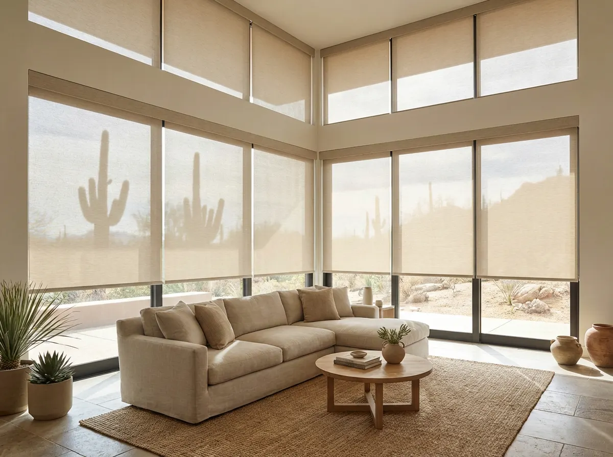
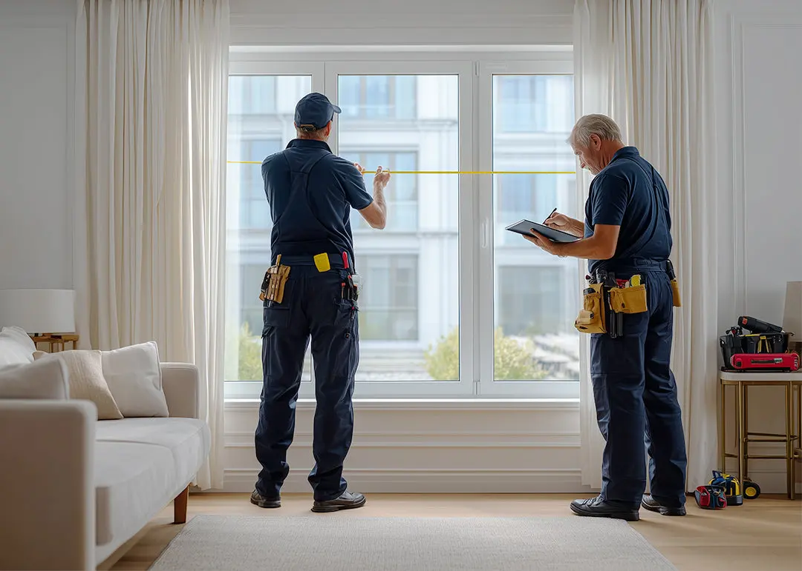
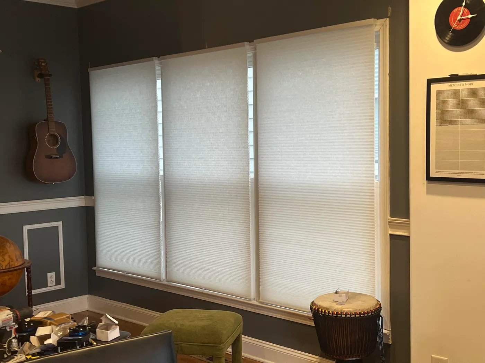
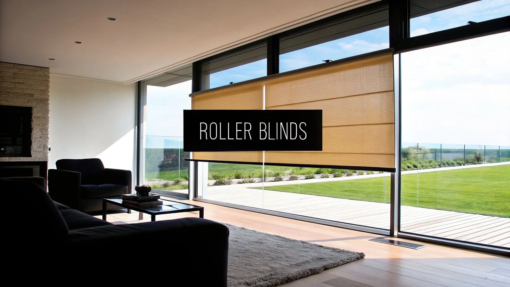

Изготовление по вашим размерам
Пошив в собственном цехе под конкретное окно — без «примерно» и подгонок на месте. Допуск — ±1 мм.

День-ночь, блэкаут, кассетные и бамбуковые. Бесплатный замер с образцами тканей, пошив в своём цехе и аккуратный монтаж. Цена фиксируется в договоре.
Каталог
Шесть больших коллекций — от регулируемых «день-ночь» до полностью затемняющих блэкаутов. В каждой — десятки тканей и оттенков.
Почему мы
Никаких предоплат за выезд, скрытых доплат и «внезапно подорожало». Вот шесть причин доверить окна нам.
Пошив в собственном цехе под конкретное окно — без «примерно» и подгонок на месте. Допуск — ±1 мм.
Замерщик приезжает на следующий день после заявки, монтаж занимает около часа на окно. Работаем без выходных.
На механизмы, полотно и монтаж. Если что-то сломалось — приедем и починим бесплатно, без споров о гарантии.
Работаем без посредников: свой цех, свои монтажники. Каталожная цена — финальная, без «сюрпризов» при замере.
Безопасны для детских и спален: OEKO-TEX, пожарные сертификаты для HoReCa. Более 300 образцов на выбор.
Стоимость фиксируется в договоре после замера и не меняется. Предоплата от 30%, остаток — после монтажа.
Хиты продаж
Самые заказываемые шторы последних месяцев — с реальными ценами за м².
День-ночь
Регулируемое освещение одним движением
от
2 490 ₽ /м²
2 990 ₽/м²
День-ночь
Выразительная зебра для современных интерьеров
от
2 890 ₽ /м²
Блэкаут
100% затемнение для здорового сна
от
3 290 ₽ /м²
Блэкаут
Управление с пульта, со смартфона и голосом
от
8 900 ₽ /м²
Кассетные
Аккуратный короб и монтаж на створку ПВХ
от
2 190 ₽ /м²
Тканевые
Свет проходит — блики и жара нет
от
2 390 ₽ /м²
Как мы работаем
Вам не нужно разбираться в тканях и креплениях — замерщик привезёт образцы, поможет выбрать и сразу посчитает точную стоимость. Всё остальное делаем мы.
Оставляете заявку на сайте или звоните. Уточняем задачу, подсказываем по тканям и бюджету, договариваемся о замере.
Замерщик приезжает с образцами тканей в удобное время. Промеряет окна, показывает материалы, сразу считает точную стоимость.
Фиксируем цену и сроки в договоре. Изготавливаем шторы в собственном цехе за 1–5 дней, предоплата — от 30%.
Устанавливаем за 1 визит, показываем как всё работает, убираем за собой. Даём гарантию 3 года и остаёмся на связи.


Отзывы
Более 9 800 заказов за 12 лет работы. Вот несколько свежих отзывов из карты и Яндекс.Услуг.
«Заказывала день-ночь на три окна в гостиную. Замерщик приехал на следующий день, всё промерил, помог с выбором ткани. Шторы пришли за три дня, монтаж занял час. Свет теперь регулируется идеально — и утром, и днём.»
Анна Петрова
Тюмень, ЖК «Заречный» · 12 сентября 2025
День-ночь «Классик»
«Спальня окнами на восток — просыпались с рассветом. Поставили блэкаут «Глубокий сон», теперь темнота хоть ночью, хоть в полдень. Отдельное спасибо за аккуратный монтаж, никаких дырок в профиле.»
Дмитрий Соколов
Тюмень, частный дом · 28 августа 2025
Блэкаут «Глубокий сон»
«Выбирала кассетные на все створки ПВХ — в квартире их шесть. Сделали скидку за объём, привезли всё за два дня. Ни одна штора не провисает, окна открываются свободно. Цена/качество — супер.»
Марина Ковалёва
Тюмень, ул. Республики · 5 октября 2025
Кассетная «Uni» 25 мм
«Бамбуковая штора на лоджию — просто находка. Смотрится очень уютно, свет даёт тёплый и мягкий. Влажность лоджия переносит отлично, уже полгода — ни капли деформации.»
Ольга Ильина
Тюмень, ЖК «Европейский» · 19 июля 2025
Бамбуковая «Натур»
«Оборудовали весь зал — 14 штор с огнезащитой. Сделали за неделю, помогли с сертификатами для пожарной. Работают жёстко, целый день туда-сюда — пока ни одной поломки за 4 месяца.»
Сергей Гаврилов
Кафе «Лофт», Тюмень · 2 августа 2025
Кафе «Панорамная»
«Заказывала кухонную влагостойкую — у окна мойка, всё брызжет. Тефлоновая пропитка реально работает: капли просто скатываются, мою губкой раз в неделю. И стоит недорого по сравнению с другими предложениями.»
Екатерина Мороз
Тюмень, ЖК «Восточный» · 23 сентября 2025
Кухня «Влагостойкая»
Вопросы и ответы
Собрали то, о чём спрашивают чаще всего. Не нашли ответ — позвоните, расскажем.

Бесплатный замер
Расскажем по ценам, подберём ткань под ваш интерьер и назначим замер на удобное время. Выезд по Тюмени — 0 ₽, без обязательств заказа.